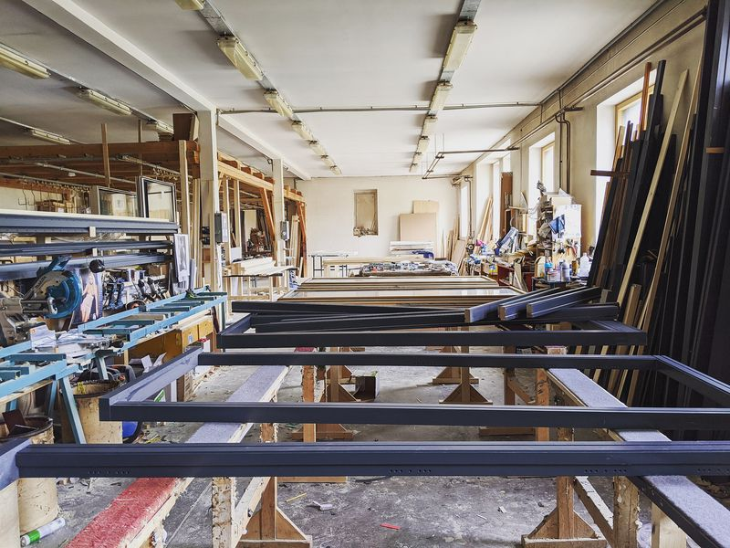
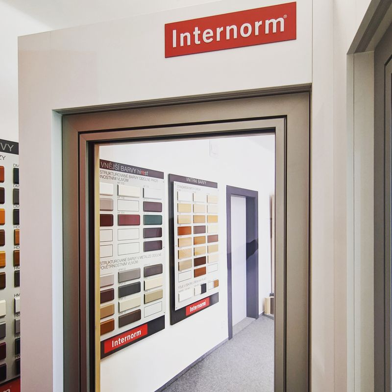
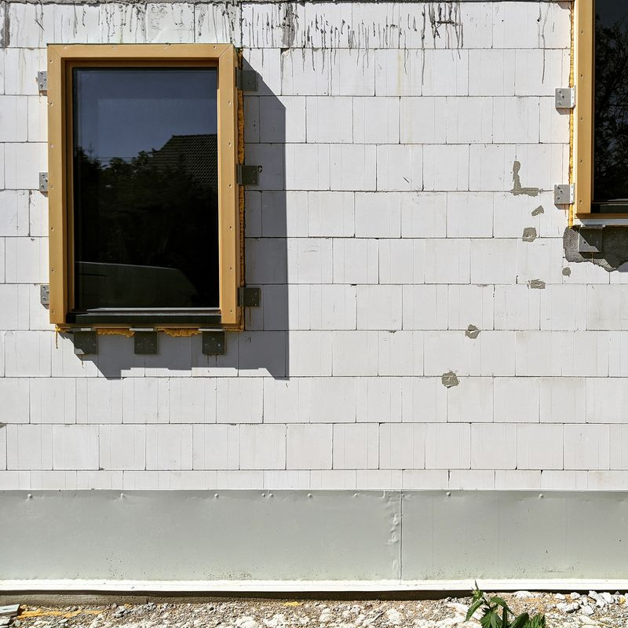

Výběr oken byl v našem případě docela jednoduchý - dali jsme na doporučení projektanta. Okna je vhodné vybírat už ve fázi projektu, protože různí výrobci mají různé způsoby kotvení, okna mají různé parametry a tomu je potřeba projekt přizpůsobit.
Naším požadavkem byla dřevohliníková okna s izolačními trojskly a certifikátem pro pasivní domy, abychom mohli využít dotaci Nová Zelená Úsporám. Dřevohliníková okna jsou vlastně dřevěná okna s vnějším hliníkovým opláštěním, které okna chrání proti povětrnostním vlivům. Jsou tedy zcela bezúdržbová. Líbí se nám více než hliníková okna. Dřevo v interiéru prostor zpříjemňuje a zútulňuje oproti hliníku, který působí chladně a sterilně. Dalšími požadavky při výběru oken byla kalená bezpečnostní skla (ESG), magnetické kontakty u otevíravých oken, dětská pojistka u balkonových dveří, bezpečnostní vchodové dveře a elektrozámek. Okna v pasivních domech jsou instalována s předsazenou montáží, čímž se zamezí vzniku tepelných mostů a rosení oken. Nad všemi okny budou navíc skryté boxy pro screenové rolety.
U větších skleněných ploch se doporučují použít kalená bezpečnostní skla, aby se předešlo prasknutí vlivem termálního šoku. Při tom může dojít k poranění a následná výměna rozbitého skla je nákladná. Sklo může samovolně prasknout vlivem rozdílných teplot na ploše skla. K tomu může dojít při částečném zastínění okna (částečně stažené rolety) nebo použitím zdroje tepla v blízkosti okna (varná konvice).
Balkonové dveře v obýváku jsou širší než ostatní a kvůli vysoké váze hrozí, že pak nebudou fungovat správně. Tento problém se dá řešit speciálním zasklením Heat Mirror, které svými parametry dvoukomorového systému odpovídá izolačnímu trojsklu. Jedná se o izolační dvojsklo se speciální čirou fólií Heat Mirror, která je vypnuta v meziskelním prostoru. Fólie Heat Mirror má funkci tepelného zrcadla, odráží tepelné záření zpět ke zdroji. Sklo splňuje požadavky pasivní stavby.
Poptávali jsme okna včetně vchodových dveří s kruhovým okénkem, jednoho HS portálu a velkého kulatého okna. Téměř všechna okna v domě jsou francouzská, kromě širokého okna v zádveří a technické místnosti. V každé místnosti jsou otevíravé balkonové dveře (celkem 7x). Projektant zaslal poptávky 3 firmám, které jsou prověřené a má s nimi dobré zkušenosti: Slavona, Truhlářství Vašíček, Janošík.
Slavona nabízí celodřevěná okna Progression ze smrkového dřeva napojovaného. Součinitel prostupu tepla celým oknem Uw = 0.61 W/m2K. Celková cena včetně montáže a DPH by vyšla na 960 000 Kč.
Truhlářství Vašíček nabízí dřevohliníková okna z nenapojovaného smrkového dřeva ve dvou provedeních: Optiwin Alphawin bez rámu a Optiwin Resista se subtilním rámem. Součinitel prostupu tepla celým oknem Uw = 0.65 W/m2K. Celková cena včetně montáže a DPH by vyšla u Alphawin na 950 000 Kč a Resista na 1 020 000 Kč.
Janošík nabízí dřevohliníková okna ze smrkového dřeva ve dvou provedeních: Kvadro se subtilním rámem a Evolut bez rámu. Součinitel prostupu tepla celým oknem Uw = 0.83 W/m2K. Celková cena včetně montáže a DPH by vyšla u Kvadro na 1 240 000 Kč a Evolut na 1 300 000 Kč.
Janošíka jsme ihned vyřadili kvůli vysoké ceně. Slavonu jsme upozadili, jelikož jsme chtěli dřevohliník. Ten Slavona také vyrábí, ale nemá tak dobré parametry. Po obdržení všech nabídek jsme se rozhodli navštívit Truhlářství Vašíček ve Skalici nad Svitavou. V tu dobu zrovna probíhala Covid-19 karanténa, ale návštěvu šlo domluvit bez problému. Okna Optiwin Resista od pana Vašíčka byla jasným favoritem našeho projektanta pana Kubíčka. Sám je ve svém domě má, stejně tak jako náš architekt pan Krč. Tvrdí, že mají nejlepší poměr cena/kvalita. Pan Vašíček bohužel nemá žádný showroom, ale aspoň jsme měli možnost navštívit přímo výrobu a prohlédnout si profily oken. Ze schůzky jsme odjížděli se smíšenými pocity. Pan Vašíček byl sice ochotný a zodpověděl nám všechny otázky, ale jinak se žádné velké nadšení nekonalo. Asi to bylo tím, že pan Vašíček zkrátka není žádný Horst Fuchs. Přesto věříme, že jeho okna jsou fajn. Domluvili jsme se s naším projektantem, že se pojedeme podívat na jednu stavbu, kde zrovna probíhala montáž dřevěných oken Optiwin, abychom si prohlédli okna naživo.

Mezitím jsem domluvil další návštěvu v showroomu firmy Torpe technik, která dodává a montuje okna známého rakouského výrobce Internorm. O těchto oknech se na fórech tvrdí, že jsou Mercedesem mezi okny. Showroom ve Vyškově je docela malý, ale k posouzení nám stačil. Na první pohled šlo poznat kvalitu a pěkný čistý design. Zaujal mě systém kotvení Triotherm a líbilo se mi, že okna mají standardně kalená skla. Rozdíl Optiwin oproti Internorm je takový, že okna Optiwin Resista mají subtilní rám, kdežto Internorm mají výraznější silný rám. Poptávku na Internorm jsme neposílali, ale od známého vím, že cena dřevohliníkových oken Internorm HF 310 je velmi podobná ceně oken Optiwin Alphawin.

Hlavními kandidáty v našem výběrovém řízení byly tedy okna Optiwin a Internorm. Po osobní návštěvě stavby, kde byla instalována okna Optiwin, jsme se rozhodli pro Optiwin Resista z Truhlářství Vašíček. Okna vypadala opravdu dobře a kvalitně. Optiwin Resista s přiznaným subtilním rámem se budou k funkcionalistické architektuře hodit více než bezrámová okna Alphawin. Okna vyrábí přímo pan Vašíček ve Skalici nad Svitavou, zatímco vývoj probíhá v Rakousku. Optiwin je vlastně takové sdružení výrobců oken. Líbí se nám, že jde o poctivou českou výrobu a v případě nějakých problémů budeme mít rychle dostupný support. Okna mají certifikát Passivhaus Institut a často jsou instalována do pasivních domů. Sám jsem si všiml, že mnoho domů v Katalogu pasivních domů má právě okna z Truhlářství Vašíček. Pasivní okna se vyrábí ze smrkového dřeva, které má ideální vlastnosti. Pasivní vchodové dveře jsou bezpečnostní s 5 západkami na jedné straně. Dětská pojistka u balkonových dveří je řešena tak, že klika lze zamknout klíčem. Magnetické kontakty či elektrozámek se dají bezproblému realizovat. Překvapilo mě, že pan Vašíček příliš neřeší kalená skla. Mělo by to jít, ale bude to nejspíš za příplatek. Sítě proti hmyzu je nutné řešit zvlášť. Kliky se bohužel dělají pouze v 1 provedení, ale dají se vyměnit. Dodací lhůta je cca 3 měsíce a na vyšší zálohu je možné získat slevu. Možná je i sezónní sleva (listopad).
